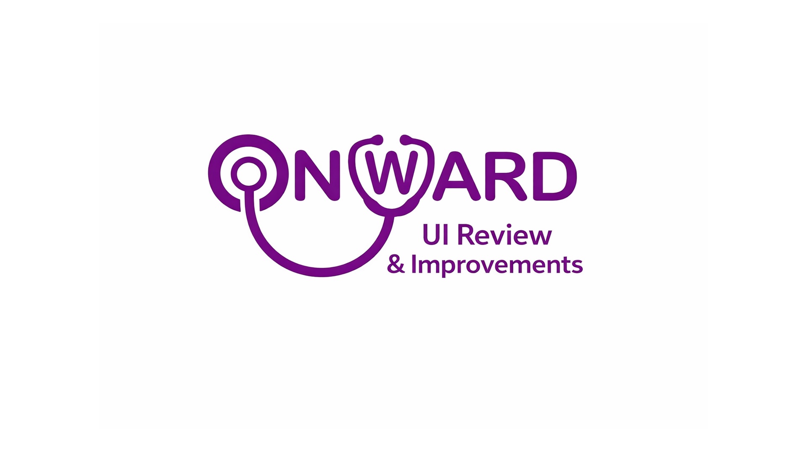

I’m Daranijoh Sanni.
Irish-Nigerian UX / MedTech designer based in Dublin — building clearer interfaces for high-stakes, healthcare, and culture-led products.
Multidisciplinary design and art practice. Previous exhibitions at Trinity’s Douglas Hyde Gallery and the OPW.
Selected projects
My Work
-
 Brand · Web
Brand · WebDas LOT, Vienna
Transforming a multi-disciplinary arts space into a multi-platform experience — 3D-led visual identity and a more immersive web presence.
View case study -

UX Review · MedTechOnWard — UI Review
A six-test UX review of an AI clinical learning app — institution sign-up, guided onboarding, explicit confirmations, useful wait states, and a personalised review section.
View case study -
 UX · MedTech
UX · MedTechATS — Nightlife Triage
An attendee-led emergency intervention concept supporting non-clinicians through the first critical minutes of nightlife medical incidents.
View case study -
 VR · Learning
VR · LearningAssemb3D
Open-source VR software and web platform helping people learn mechanical assembly for medical devices, step by step.
View case study
About
A bit about me.
I’m a multidisciplinary designer working across UX, service design, and MedTech. I’m drawn to projects where clarity matters most — emergencies, learning, access — and where good interaction design can lower the cost of a hard moment.
I work between research, prototyping, and hands-on visual design. My practice also draws from a fine-art background.
- NowUX / MedTech designer — Dublin, Ireland.
- StudiedCommunication / interaction design programmes; ongoing self-directed research.
- ExhibitedTrinity College Dublin · Douglas Hyde Gallery · OPW.
- ToolsFigma, Webflow, Cursor, Blender, Unreal, OpenCV.